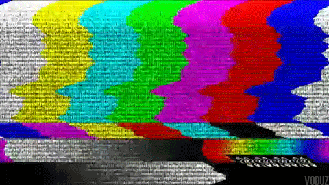

--- [PROJECTS] ---
Hospital Triage System
[Open Source]

A basic CRUD application built as a hospital bed management and patient triage system. Features include adding and managing patients, assigning and releasing beds, automated billing, and other administrative functionality. Developed as a team project during our freshman year for our SE-1243 class.
AI-based language webapp
[Open Source]

An AI-powered language learning app that uses the Google Gemini 2.5 Flash API to generate personalized lessons tailored to each user's skill level. Includes a Scan Mode using the Google Vision API to translate real-world text. Developed as a group project for our SE-2141 class. [CURRENTLY INACTIVE TO SAVE API COSTS]
School publication website
[Closed Source]

A school publication website for the central echo designed to host articles, newsletters, magazines, videos, and archived issues. Built with a headless WordPress CMS to provide a modern, responsive platform for publishing, organizing, and accessing publication content. [CURRENTLY IN DEVELOPMENT]